Combo427×pp538
Combo et pp en direct
Les chiffres défilent à chaque note, le pp « si FC » à côté.
Gratuit pour Windows 10 et 11
Glisse un .osr, choisis ton overlay, exporte. Dancing! rejoue la partie avec danser, dessine l’overlay image par image et sort une vidéo prête à poster.
Anatomie d’une image
Ton .osr, ton skin, la map d’origine. Le flou de mouvement est calculé sur GPU.
Score, combo, pp en direct, barre d’erreur, classement de la map. Même horloge que la vidéo : synchro à l’image près.
Widgets Dancing! et catalogue tosu, placés à la souris, alimentés par les données du replay.
Tout est fusionné par ffmpeg, en tranches rendues en parallèle sur tous les cœurs du processeur.
Sous le capot
danser rejoue ton replay sur ta carte graphique. Fais défiler pour l’ouvrir.
Capot et ventilateur, radiateur, circuit, plaque arrière. Voici ce qui travaille pendant un rendu Dancing!.
Cercles, sliders, curseur, skin, fond de la map : danser calcule chaque image sur les cœurs de la puce. Avec le flou de mouvement, il en calcule 4 à 14 par image et les fusionne.
Textures du skin et de la map, images intermédiaires du flou : elles vivent dans la mémoire de la carte, sans aller-retour vers le reste du PC.
NVENC chez NVIDIA, AMF chez AMD, QSV chez Intel : il compresse la vidéo sans occuper les cœurs. Sans lui, x264 encode sur le processeur.
Le grand ventilateur aspire l’air, le pousse entre les ailettes et autour des caloducs en cuivre, puis à travers la carte. La puce reste stable pendant les longs rendus.
Les images partent par le connecteur PCIe. Le processeur dessine l’overlay et les widgets, puis ffmpeg fusionne tout, en tranches rendues en parallèle sur tous ses cœurs.
Le résultat
Presets
Chaque preset recolore tout l’overlay d’un clic : bandeau, panneaux, jugements, touches. Ensuite, tout se règle à la souris.
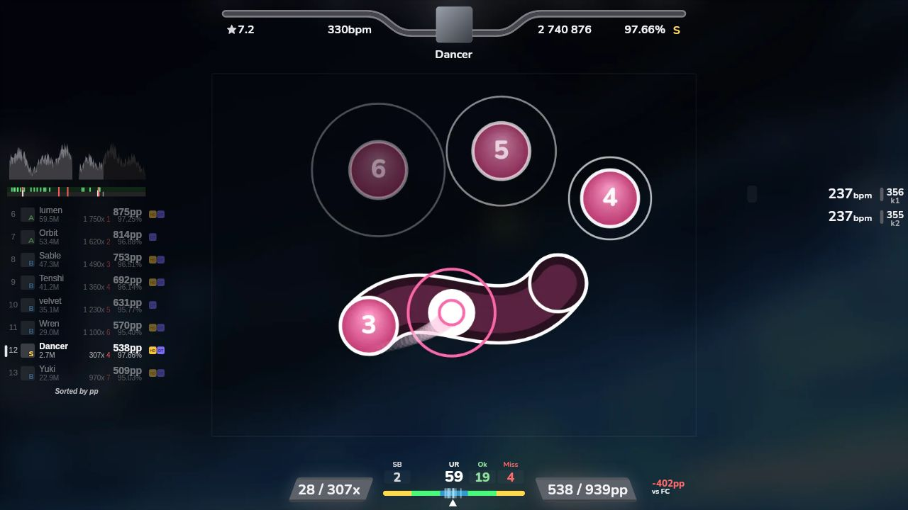
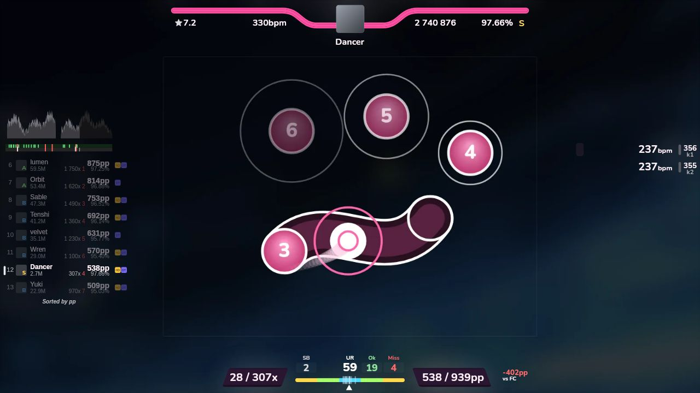
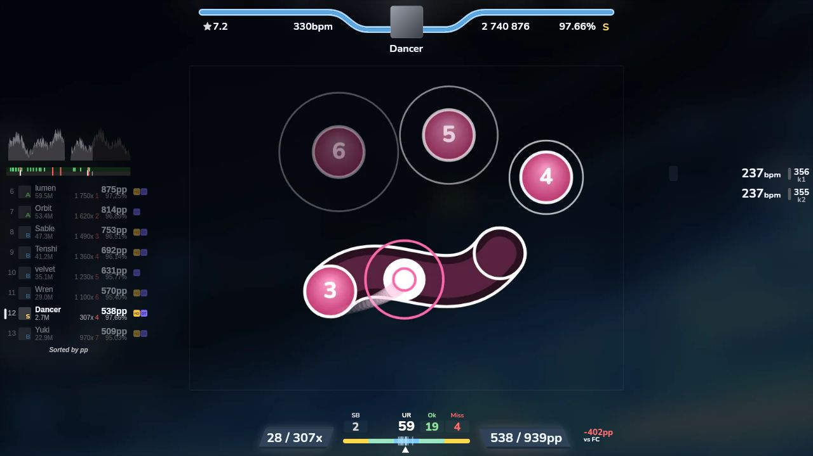
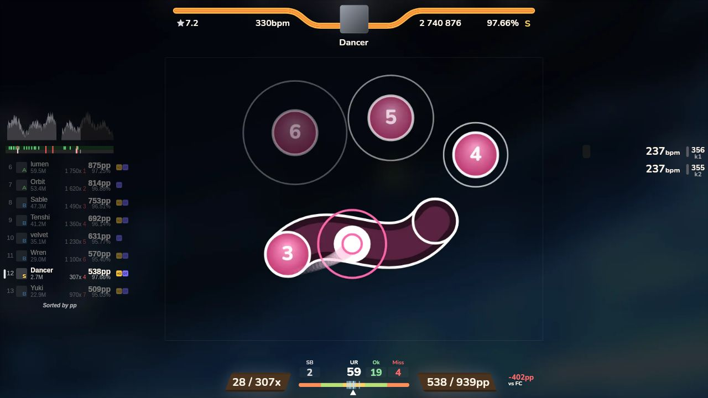
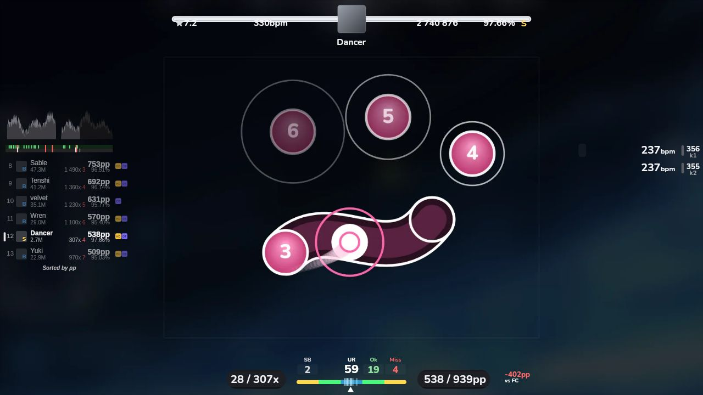
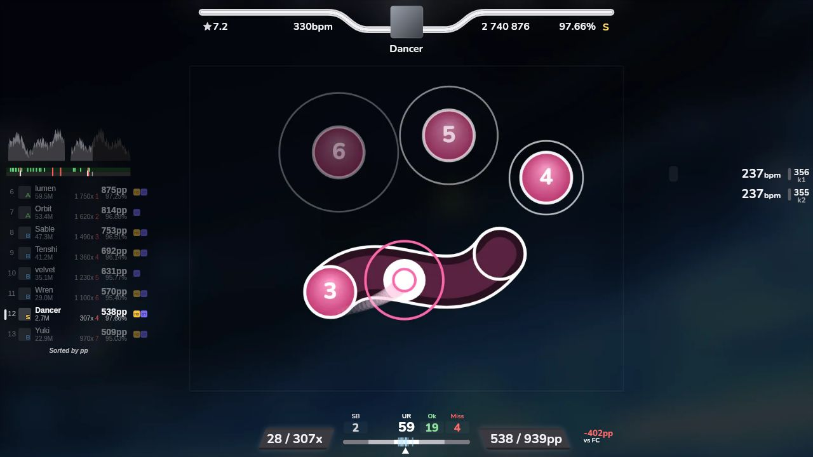
En un coup d’œil
Les chiffres défilent à chaque note, le pp « si FC » à côté.
Chaque frappe s’affiche, à la milliseconde près.
Le top 50 global, et ta place qui monte en direct.
Moteur maison et trois overlays dédiés.
Ta note dans un cercle en verre, le score détaillé.
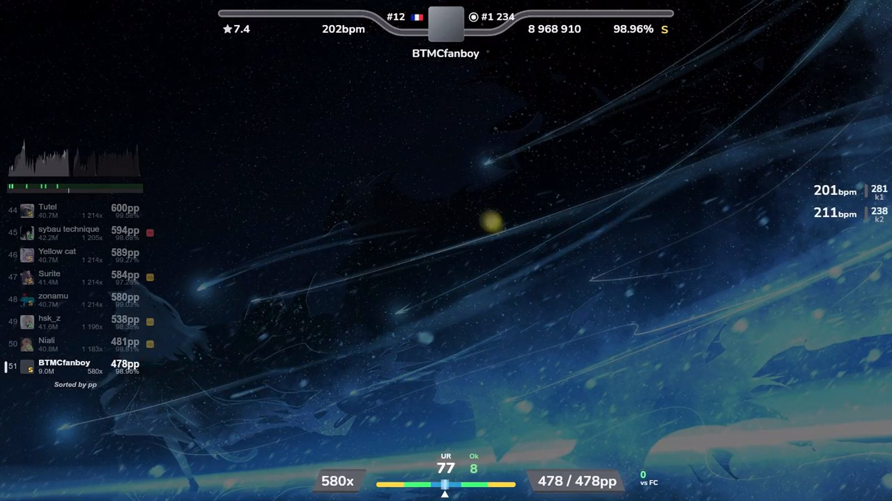
Moments forts détectés, export 1080 × 1920.
Via tosu, dans OBS, avec ton preset et tes widgets.
Fonctions
Bandeau de vie, combo et pp qui défilent, barre d’erreur, classement trié par pp. Dix presets, couleurs et disposition réglables à la souris.
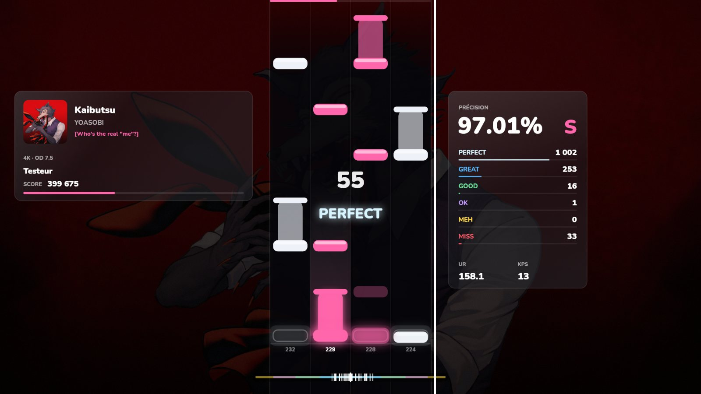
danser ne le gère pas : Dancing! a son propre moteur. Notes longues, jugements, musique, et trois overlays rien que pour lui.
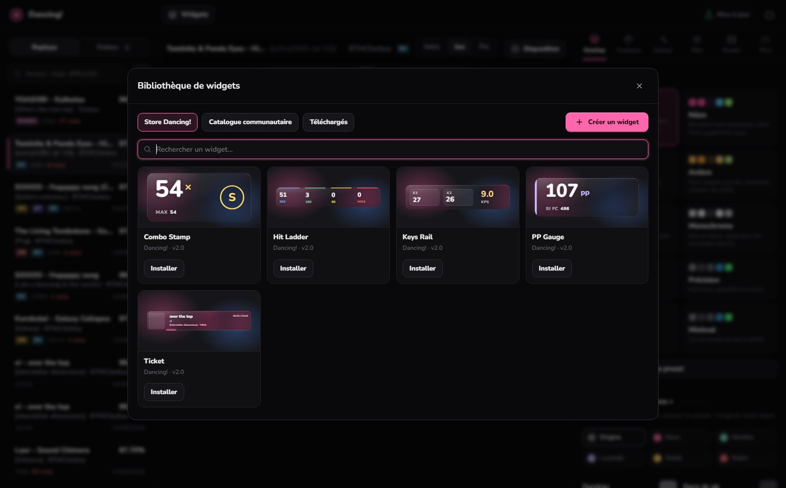
Neuf widgets où le jeu derrière est vraiment flouté, tout le catalogue tosu, et un créateur sans code : 26 données, polices, couleurs, animations.

Carte de la map avant la partie. Après, l’écran Loupe (ta note dans un cercle en verre, le classement de la map) ou Classique. La musique de la map joue dessous.

danser, tosu, ffmpeg et le moteur des widgets sont inclus. Les nouvelles versions sont proposées au démarrage et s’installent en un clic, réglages gardés.
Essaie-le
Comme dans l’éditeur de disposition de Dancing! : glisse un widget, la molette change sa taille, double-clic pour le remettre en place.
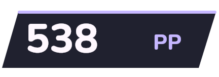
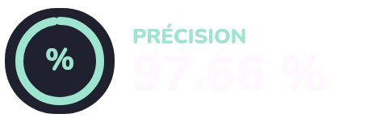
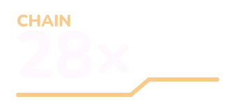
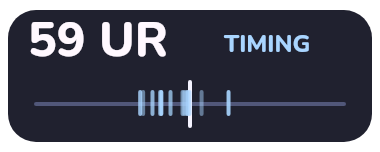
Encodeurs
Dancing! prend l’encodeur de ta carte graphique quand il existe. Les barres sont indicatives : la vitesse réelle dépend de ton matériel.
H.264 et H.265, le plus rapide sur une carte NVIDIA.
très rapideL’équivalent chez AMD, sans charger le processeur.
rapideSur les processeurs Intel avec graphique intégré et les cartes Arc.
rapideLe choix sûr, partout. Rendu en tranches sur tous les cœurs.
moyenFichiers plus légers à qualité égale, mais plus lent.
lentDémarrer
Télécharge Dancing!-Setup.exe et lance-le. Il trouve tout seul ton dossier osu!.
Un replay dans la liste ou un .osr déposé, puis un preset. Vérifie avec l’aperçu de 12 s.
La vidéo arrive dans le dossier videos/, prête à poster.
Fiche technique
Questions
Un logiciel Windows qui prend un replay osu! (.osr) et en fait une vidéo prête à poster : le jeu rendu par danser, un overlay animé par-dessus, une intro et un écran de résultats.
Non. danser, tosu, ffmpeg et le moteur des widgets sont fournis avec Dancing!. Il te faut juste osu! et tes maps.
Oui, avec trois overlays exclusifs. Seules les maps standard jouées en mode mania (maps converties) ne sont pas encore prises en charge.
Quand une nouvelle version sort, Dancing! te la propose au démarrage : clique sur « Mettre à jour », il se ferme, s’installe et redémarre tout seul. Tes réglages, presets, replays importés, widgets et vidéos sont gardés.
Non, le classement global s’affiche tout seul pour les maps classées et loved. Tu peux quand même mettre ta propre clé dans les réglages.
Oui, Windows prévient pour les programmes peu connus. Clique sur « Informations complémentaires », puis « Exécuter quand même ».
Non, c’est un projet indépendant, sans lien avec ppy. Il s’appuie sur danser et tosu, chacun sous sa propre licence.
Windows 10 / 11 · gratuit